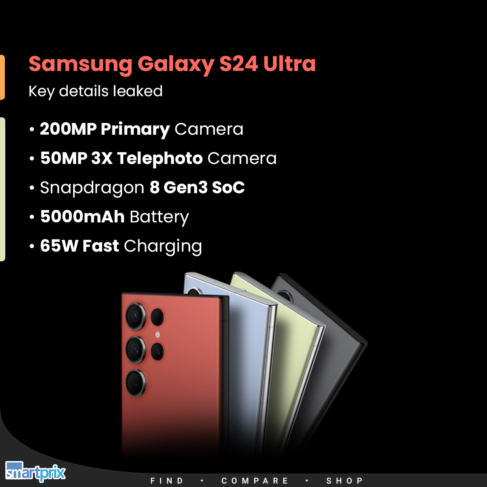
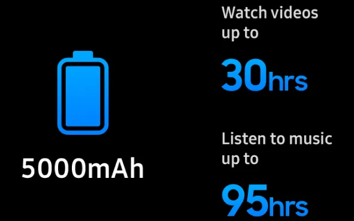

Specifications
Display: 6.8-inch Dynamic AMOLED 2X, 1440 x 3088 pixels, 120Hz refresh rate Processor: Exynos 2400 (International) or Qualcomm Snapdragon 8 Gen 3 (USA/China) RAM: 8GB or 12GB Storage Options: 256GB, 512GB, or 1TB (expandable via microSD card in some models) Rear Cameras: Main: 200 MP Ultra-wide: 12 MP Periscope Telephoto: 10 MP (10x optical zoom) Telephoto: 10 MP (3x optical zoom) Front Camera: 40 MP Battery: 5,000 mAh with 45W fast charging, 15W wireless charging, 4.5W reverse wireless charging Operating System: Android 14 with One UI 6.0 Build: Glass front (Gorilla Glass Victus 3), aluminum frame, glass back Water and Dust Resistance: IP68 Connectivity: 5G, Wi-Fi 6E, Bluetooth 5.3, USB Type-C Additional Features: S Pen support, in-display fingerprint sensor, stereo speakers
Design
Form Factor: The phone features a modern, slightly curved design with a slim profile that feels comfortable to hold. Front: The front of the device is dominated by a large 6.8-inch Dynamic AMOLED 2X display with minimal bezels. It has a punch-hole cutout for the 40 MP front camera, positioned centrally at the top of the screen. The display has a high resolution and supports a 120Hz refresh rate for smooth scrolling and gaming. Back: The rear of the phone is finished in either glass or a matte texture, depending on the color option. It features a distinctive camera module that houses the four rear cameras arranged in a vertical stack. The camera lenses are housed in a rectangular, slightly protruding bump, which helps to enhance the camera's visual impact and functionality. Frame: The frame is made of durable aluminum, contributing to the phone's robust and premium feel. It has a slightly rounded edge for comfortable handling. Color Options: The Galaxy S24 Ultra is available in a range of colors, including classic options like Phantom Black, Cream, and Green, as well as exclusive hues that may vary by region. Additional Design Elements: The device includes an integrated S Pen slot on the bottom edge, a hallmark of the Ultra series. The phone also features an in-display fingerprint sensor for biometric security.

Battery
The Samsung Galaxy S24 Ultra features a 5,000 mAh battery. It supports fast charging at 45W, which allows for quick top-ups. Additionally, it supports 15W wireless charging and 4.5W reverse wireless charging, which can be used to charge other devices like earbuds or a smartwatch. This battery setup aims to provide a full day of usage with normal use.
Camera
The Samsung Galaxy S24 Ultra features a 200 MP main camera with optical image stabilization (OIS) and an f/1.7 aperture for excellent low-light performance. It includes two telephoto lenses: a 10 MP periscope lens with 10x optical zoom and a 10 MP telephoto lens with 3x zoom, both with OIS. The 12 MP ultra-wide camera offers a 120-degree field of view, ideal for wide-angle shots. For video, it supports 8K recording at 30fps and 4K at 120fps, providing exceptional detail for videography.
Performance
The Samsung Galaxy S24 Ultra offers top-tier performance, powered by the Qualcomm Snapdragon 8 Gen 3 processor, delivering a 20% boost in CPU speed and 30% in GPU efficiency. It excels at multitasking with 12 GB of RAM and up to 1TB of storage. With enhancements in AI processing, it’s ideal for gaming, photo editing, and 8K video recording. Its performance is smooth, even under heavy use, making it one of the best flagship smartphones of 2024.